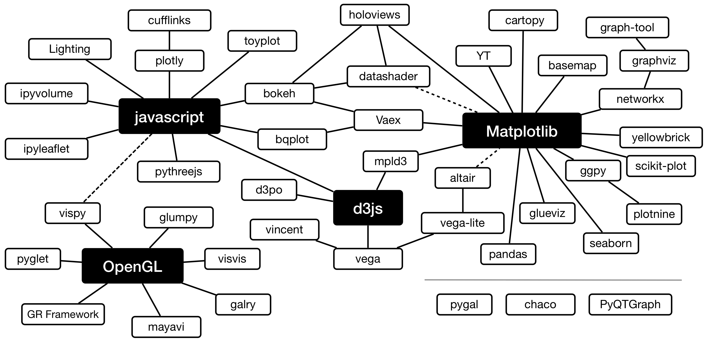

3. Plotting with Python¶
Plotting is an essential component of data analysis. It helps you to understand complex data sets and help others understand them too. However, the python visualization world can be a frustrating place. There are many different options and choosing the right one is a challenge.
3.1. The Python Visualization Landscape¶

Source: Nicolas P. Rougier: An adaptation the Python Visualization Landscape slide from Jake VanderPlas’ keynote at PyCon 2017 (slides, video).
Online you find many post and reports which compare and assess different Python libraries (e.g. blog post by Dan Saber or by Tim Hopper). These are very valuable sources of information if you are not yet sure which library fits best your needs.
3.2. Holoviews¶
HoloViews is an open-source Python library designed to make data analysis and visualization seamless and simple. With HoloViews, you can usually express what you want to do in very few lines of code, letting you focus on what you are trying to explore and convey, not on the process of plotting.
3.2.1. A Reproduction of Gapminder¶
In Hans Rosling’s iconic TED Talk he shows us that many advances have been made since the 60s, when our notions of development were established. The engaging infographic illustrates how our ongoing perceptions of a “first world” and a “third world” are wrong, and that the world has become a spectrum of developing countries.
Gapminder demo demonstrating how to combine to extend a HoloViews plot with custom bokeh widgets to deploy an app (Source code).
In [1]:
import pandas as pd
import numpy as np
import holoviews as hv
from bokeh.io import curdoc, output_notebook, show
from bokeh.application.handlers import FunctionHandler
from bokeh.application import Application
from bokeh.layouts import layout
from bokeh.models import Slider, Button
from holoviews.plotting.bokeh import BokehRenderer
# Activate bokeh
output_notebook()
WARNING: param.Version now supports PEP440 and a new tag based workflow. See param/version.py for more details
In [2]:
# Load data set
gapminder_df = pd.read_csv("../data/gapminder.csv")
# Declare data set
ds = hv.Dataset(gapminder_df)
def gapminder_plot(doc):
# Apply dimension labels and ranges
kdims = ['Fertility', 'Life expectancy']
vdims = ['Country', 'Population', 'Group']
dimensions = {
'Fertility' : dict(label='Children per woman (total fertility)', range=(0, 10)),
'Life expectancy': dict(label='Life expectancy at birth (years)', range=(15, 100)),
'Population': ('population', 'Population')
}
# Create Points plotting fertility vs life expectancy indexed by Year
gapminder_ds = ds.redim(**dimensions).to(hv.Points, kdims, vdims, 'Year')
# Define annotations
text = gapminder_ds.clone({yr: hv.Text(1.2, 25, str(int(yr)), fontsize=30)
for yr in gapminder_ds.keys()})
# Define options
opts = {'plot': dict(width=950, height=450,tools=['hover'], size_index='Population',
color_index='Group', size_fn=np.sqrt, title_format="{label}"),
'style': dict(cmap='Set1', size=0.3, line_color='black', alpha=0.6)}
text_opts = {'style': dict(text_font_size='52pt', text_color='lightgray')}
# Combine Points and Text
hvgapminder = (gapminder_ds({'Points': opts}) * text({'Text': text_opts})).relabel('Gapminder Demo')
# Define custom widgets
def animate_update():
year = slider.value + 1
if year > end:
year = start
slider.value = year
# Update the holoviews plot by calling update with the new year.
def slider_update(attrname, old, new):
hvplot.update((new,))
def animate():
if button.label == '► Play':
button.label = '❚❚ Pause'
doc.add_periodic_callback(animate_update, 200)
else:
button.label = '► Play'
doc.remove_periodic_callback(animate_update)
start, end = ds.range('Year')
slider = Slider(start=start, end=end, value=start, step=1, title="Year")
slider.on_change('value', slider_update)
button = Button(label='► Play', width=60)
button.on_click(animate)
# Get HoloViews plot
hvplot = BokehRenderer.get_plot(hvgapminder, doc)
# Make a bokeh layout and add it as the Document root
plot = layout([[hvplot.state], [slider, button]], sizing_mode='fixed')
doc.add_root(plot)
return doc
In [3]:
# To display in the notebook
handler = FunctionHandler(gapminder_plot)
app = Application(handler)
show(app)
INFO:bokeh.server.server:Starting Bokeh server version 0.12.15 (running on Tornado 5.0.1)
INFO:tornado.access:200 GET /autoload.js?bokeh-autoload-element=f6dae252-4165-40a5-9a4f-7d28444b9c70&bokeh-absolute-url=http://localhost:60784&resources=none (::1) 982.80ms
INFO:tornado.access:101 GET /ws?bokeh-protocol-version=1.0&bokeh-session-id=5mX733ONVy0VBRJulyZrYO8QkHgJUGxdRpsbxdbV6fI9 (::1) 15.60ms
INFO:bokeh.server.views.ws:WebSocket connection opened
INFO:bokeh.server.views.ws:ServerConnection created